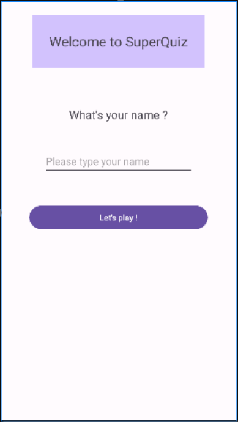

Certification EF3 – Développement Android en Java
OpenClassrooms – Projet d’application mobile
Présentation personnelle et contexte
Je suis étudiant en BTS SIO option SLAM. J’ai choisi cette formation car je suis passionné par le développement logiciel
Pour la certification EF3, j’ai décidé de me certifier via OpenClassrooms sur le développement d’applications mobiles en Java
Mon objectif était d’acquérir des compétences concrètes en développement mobile, en réalisant un projet complet et fonctionnel
Présentation du projet
Objectifs
Dans le cadre de cette certification, j’ai réalisé un projet pratique autour du développement Android en Java. L’objectif principal était de maîtriser les bases du développement mobile :
- Création d’interfaces utilisateur
- Gestion des activités et de la navigation
- Manipulation des données
- Interaction avec des API (si applicable)
Les contraintes étaient principalement techniques : respecter les bonnes pratiques Android, bien utiliser Java (classes, sous-classes, héritage), et produire une application fonctionnelle et stable.
Images du projet

Interface principale de l’application
Analyse du besoin et conception
Je me suis formé avec OpenClassrooms sur un projet d’application de quizz. J’ai pu identifier les fonctionnalités essentielles, définir les cas d’usage et structurer l’application.
Mes choix techniques se sont naturellement orientés vers :
- Java : pour la logique métier et la gestion des données
- Android Studio : pour le développement et le débogage
- XML : pour la définition des interfaces
Développement et mise en œuvre
Fonctionnalités développées
- Navigation entre écrans (Activities)
- Gestion des formulaires et des entrées utilisateur
- Stockage local des données (SharedPreferences, fichiers)
- Affichage dynamique des questions et des résultats
J’ai structuré mon code en respectant l’architecture recommandée par Android :
- Séparation des activités
- Création de classes utilitaires
- Externalisation des ressources (strings, styles) dans les fichiers XML
Exemple de code
// Exemple de classe Java pour gérer un quiz
public class Quiz {
private List questions;
private int score;
public Quiz() {
this.questions = new ArrayList<>();
this.score = 0;
}
public void addQuestion(Question question) {
this.questions.add(question);
}
public void checkAnswer(int questionIndex, String userAnswer) {
if (questions.get(questionIndex).getCorrectAnswer().equals(userAnswer)) {
score++;
}
}
public int getScore() {
return score;
}
}

Code source dans Android Studio
Sécurité et bonnes pratiques
J’ai appliqué les bonnes pratiques de sécurité enseignées dans la formation :
- Gestion correcte des permissions Android (dans le fichier
AndroidManifest.xml) - Respect de la confidentialité des données stockées localement
- Écriture d’un code lisible, commenté et structuré
- Utilisation des bonnes pratiques de développement Java (encapsulation, héritage, etc.)
J’ai également veillé à ce que l’application soit stable et réactive, en testant régulièrement sur différents appareils et versions d’Android.
Compétences mobilisées
Gérer le patrimoine informatique
Recenser et identifier les ressources numériques :
Dans le cadre de mon projet Android, j’ai identifié et utilisé les ressources suivantes :
Android Studio (environnement de développement), GitHub (gestion de version),
OpenClassrooms (ressources pédagogiques), et les API Android (pour les fonctionnalités natives).
Exploiter des référentiels, normes et standards :
J’ai respecté les bonnes pratiques de développement Android :
architecture MVC (séparation des activités, classes utilitaires),
normes Java (encapsulation, héritage), et standards XML pour les interfaces.
Organiser son développement professionnel
Mettre en place son environnement d'apprentissage : Utilisation de GitHub, documentation technique
Mise en place d'une veille technologique : Evolution des langages de programmation dans les applications mobiles Android
Analyse critique et prise de recul
Avec plus de temps, j’aurais aimé :
- Intégrer une base de données SQL (Room ou SQLite) pour une gestion plus avancée des données
- Améliorer l’interface utilisateur avec des animations et un design plus moderne
- Ajouter des fonctionnalités supplémentaires comme un système de scores en ligne ou un partage des résultats
Ce projet m’a donné envie de continuer dans le développement mobile et d’explorer Kotlin, qui devient la norme sur Android. Je souhaite également approfondir mes connaissances en architecture MVVM et en utilisation d’API REST.
Conclusion
Cette certification m’a permis d’acquérir des compétences concrètes en développement mobile, notamment :
- Développer une application mobile en Java
- Utiliser Android Studio et ses outils de débogage
- Structurer une application selon les bonnes pratiques Android
Elle m’a fait progresser techniquement, mais aussi en autonomie et en rigueur. Ce projet s’inscrit pleinement dans mon projet professionnel, qui est de devenir développeur d’applications, que ce soit mobile ou web.
Je compte poursuivre dans cette voie, en me formant sur Kotlin et en réalisant des projets plus ambitieux.
Galerie d’images

Écran d’accueil

Questionnaire interactif

Affichage des résultats